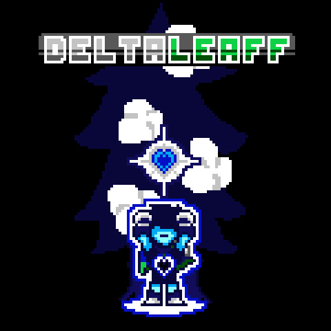

A DELTARUNE fangame, where I would be Toby Fox and made DELTARUNE. Consisting of 25 total chapters, many references, and so much more. Currently, an outdated demo is out but I don't suggest you play it.
Full Release - 0% CompleteHello!! Yes, it's me, LeaffyBoi!! If you came across this website before the changes I made now, I want it to be known that I'm okay. If not, hello!!! This is going to be a site for my projects.